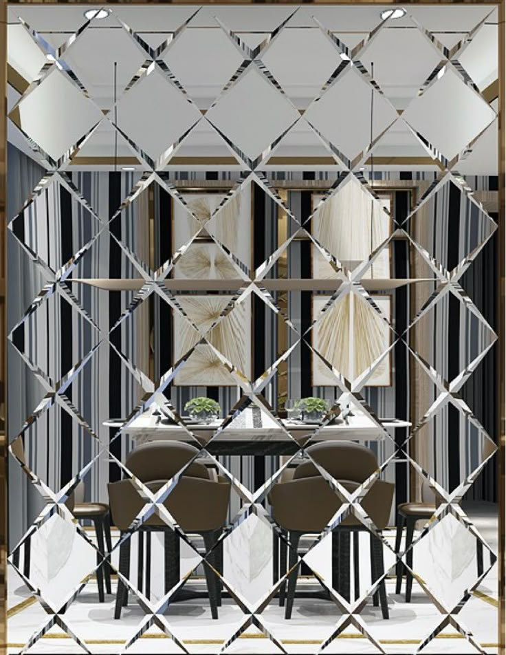

GlassStudio · Manikonda, Hyderabad
Glass Work & Mirror Installation in Manikonda
Your local glass shop in Manikonda: mirrors, shower glass, partitions and glass doors for homes in Manikonda, Puppalaguda, Alkapur Township and Neknampur.
Your neighbourhood glass shop in Manikonda
GlassStudio is based in Mahalneknapur, Manikonda, so homes and shops in Manikonda are right next door for us. That means quicker site visits for measurement, faster installation, and a team that is close by if anything needs attention after the job.
Most of our Manikonda work is for apartments and independent houses: bathroom mirrors, shower glass, wardrobe mirrors, glass partitions between living and dining, and sliding doors for balconies.
- Based in Mahalneknapur, Manikonda
- Quick site visits in the neighbourhood
- Custom mirrors and LED mirrors
- Glass work for apartments, houses and shops
Mirror installation in Manikonda
- Bathroom and vanity mirrors cut to size, with polished or bevelled edges
- LED mirrors with built-in lighting for bathrooms and dressing areas
- Wardrobe mirrors for shutters and dressing units
- Full wall mirrors for gyms, dance studios and salons
- Decorative mirrors in round, arch and custom shapes
Other glass work in Manikonda
- Shower glass partitions and enclosures
- Glass partitions for living, dining and pooja rooms
- Sliding and telescopic glass doors
- Balcony glass railings
- Glass table tops and shelves
- Shop front glass for shops on Manikonda main road
Localities we serve around Manikonda
Manikonda, Mahalneknapur, Neknampur, Puppalaguda, Alkapur Township, Lanco Hills, Narsingi, Khajaguda and Shaikpet.
Frequently asked questions
Where is GlassStudio located?
We are in Mahalneknapur, Manikonda, Hyderabad 500089. Call or WhatsApp +91 92664 72817 for directions or a site visit.
Do you install mirrors in Manikonda apartments?
Yes. We cut mirrors to size, finish the edges and install them on site, including LED mirrors for bathrooms.
Book a site visit in Manikonda
Send rough sizes or site photos on WhatsApp for an estimate, or call +91 92664 72817.